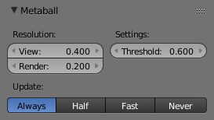
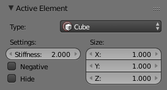

Properties¶
All Meta objects in a scene interact with each other. The settings in the Metaball section apply to all meta objects. In Edit Mode, the Active Element panel appears for editing individual meta elements.

global meta properties. |

individual meta properties. |
Resolution¶
The Resolution controls the resolution of the resultant mesh as generated by the Meta object.
- View
- The 3D View resolution of the generated mesh. The range is from (0.05 to 1.0) (finest to coarsest).
- Render
- The rendered resolution of the generated mesh. The range is from (0.05 to 1.0) (finest to coarsest).
One way to see the underlying mathematical structure is to lower the Resolution, increase the Threshold and set the Stiffness (see below) a fraction above the Threshold. Fig. Underlying. is a Meta cube with the above mentioned configuration applied as follows: Resolution of 0.410, Threshold of 5.0 and Stiffness a fraction above at 5.01.
{kind=link}
You can clearly see the underlying cubic structure that gives the meta cube its shape.
Threshold (Influence)¶
Reference
Threshold defines how much a meta’s surface “influences” other metas. It controls the field level at which the surface is computed. The setting is global to a group of Meta objects. As the threshold increases, the influence that each meta has on each other increases.
There are two types of influence: positive or negative. The type can be toggled on the Active Element panel while in Edit Mode, using the Negative button. You could think of positive as attraction and negative as repulsion of meshes. A negative meta will push away or repel the meshes of positive Meta objects.
{kind=link}
Positive.
A positive influence is defined as an attraction, meaning the meshes will stretch towards each other as the rings of influence intersect. Fig. Positive. shows two meta balls’ rings of influence intersecting with a positive influence.
Notice how the meshes have pulled towards one another. The area circled in white shows the green influence rings intersecting.
Update¶
While transforming metas (grab/move, scale, etc.), you have four “modes” of visualization, located in the Update buttons group of the Metaball panel:
- Always
- fully draw the meta during transformations.
- Half Res
- During transformations, draw the meta at half its Wiresize resolution.
- Fast
- Do not show meta mesh during transformations.
- Never
- Never show meta mesh (not a very recommended option, as the meta is only visible at render time!).
This should help you if you experience difficulties (metas are quite compute-intensive...), but with modern computers, this should not happen, unless you use many metas, or very high resolutions...